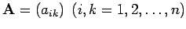

Lineare Gleichungssysteme
Gegeben sei das lineare Gleichungssystem
Das System (19.25) lautet in Matrixschreibweise
Dabei bedeuten:
Die quadratische Matrix  sei regulär, so daß das System (19.25) eine eindeutige Lösung besitzt. Bei der numerischen Lösung von (19.25) kann man im wesentlichen zwei Verfahrensklassen unterscheiden:
- 1. Direkte Verfahren,
- die durch elementare Umformungen das Gleichungssystem auf eine Form bringen, aus der die Lösungen unmittelbar abzulesen oder leicht zu bestimmen sind. Dazu gehören das Austauschverfahren und die in den folgenden Abschnitten
Dreieckszerlegung einer Matrix, CHOLESKY-Verfahren bei symmetrischer Koeffizientenmatrix
und Orthogonalisierungsverfahren beschriebenen Verfahren.
- 2. Iterationsverfahren,
- die von einer bekannten Startnäherung aus eine Folge von Näherungslösungen erzeugen, welche gegen die Lösung von (19.25) konvergiert (s. Abschnitt Iteration in Gesamt- und Einzelschritten).